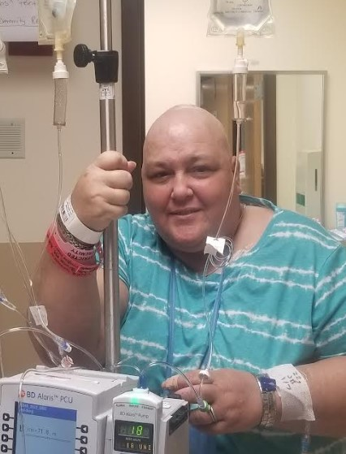

This is the woman who had an idea to help those in need, and turned it into a beautiful organization.

~K
Founder/CEO
Where do I begin?... I could write a book filled with pages full of why's, hows, and so much more. But no, I will write a bio filled with the harsh, beautiful uncut unfiltered reality which is me.
It would be easy to say "yeah" this started many, many years ago with the words I heard while sitting in the clinic office just on the other side of a door..."Speckled Blood Pattern, "Lupus".... But that's not going to work.
Let's face it I was stuck, no insurance, working to barely make bills in an age and gender which according to (statistics), I should be great. Not even when I reached out for local assistance, these words will ring true in my ears for the rest of my life.... "I can't get help because I was not of a specific group and they could not give me any assistance". Yes I was told that to my face.
I knew something was wrong.
I didn't feel well, and I was always so tired, and despite the ease of the "Clinic Doc's" who took 5 mins and put pen to script, then said see ya in 6 months, the medications were not helping. I was sick and I knew. Luckily I got a Doctor at the Clinic one day who didn't do the usual, he actually knew I needed a scan , why because there was a large lump on the side of my neck. So I finally took a trip to get it checked, mind you without insurance. So my trip consisted like I didn't really "matter" but a quick scan was done. There was a Node/tumor in my neck right next to my jugular. As I tried to ask questions, I was scared, confused, wanting to know what it meant as I looked at it on the screen, it was like I was talking to myself. No answers were given; So let's start from there.
1 Node/Tumor found in 2015 by a "Hospital", and guess what I was never spoken to about it again. Why because No Doctor wanted an uninsured medical headache.
So for years I convinced myself it couldn't be bad right?? A doctor would act if it was? Right? After all I was already dealing with Lupus and Thyroid issues right? WRONG.
All that happened was I got sicker and time trickled on. I got sicker and sicker always getting the pen to script. Never got any answers, just told to push on keep going.
Constantly asking for assistance, filing for Social Security, SSI you name it. ALWAYS falling through the cracks.
Ashamed of the horrific things my body felt and did, going without basic needed items to help with the things going wrong with my body,
I was saddened but didn't want to be a financial burden to my husband. I was afraid he wouldn't want me or love me if he knew just how bad I felt asking for more help and money to get those items.
I will admit it got to the point where I almost chose to end it all, but my faith has always been stronger. Thank you God.
Fast forward, years of medication (none) that helped, situation even worse for me, 160 plus pounds of weight added to me already being a fluffy gal.
Yeah that was always fun, I could see it in peoples faces when they looked at me; (Bet all she does is eat cakes and fatty Foods) So far from the truth.
Never knowing the Stigma horrors I was facing emotionally and physically. I was humiliated by what I had become. But there was a bright light in all of this.
My amazing husband Matthew. My rock, the man who when he took his vow meant every word of it.
Finally the right person on the other end of the phone after my 10,000+ calls... And I heard the words Medicaid approved.
It was like a whole world of medical accessibility was finally opened to me.
A few days later Matt and I were going out in the sun so I applied a sun block, and within hours I was covered with red painful blisters from head to toe on my face everywhere.
We knew this was not normal either. This time we left our (area) and sought out a Doctor in hopes of help. It was the best decision we ever made.
Hearing the words "This is NOT normal and we need to run more tests", was like a surreal moment.
We now know I am allergic to petroleum based products along with my 20 plus rare and non-rare autoimmune diseases combined with both reactive and non-reactive tumors.
Those tests led to more tests, scans, MRI'S, PET scans, and so much more, bringing us to where we are now.
8 years of fighting with SSD/SSI, I am now legally disabled.
With an amazing Doctor by my side we began the building (which is now in my book one of the BEST medical teams ever comprised of every ologist you can name, specialists, and an army of nurses who I adore.) That 1st Node/Tumor has turned into too many to count, I have lost count of surgeries and procedures, and as I type this my last one was yesterday May 22, 2023.
I am a "Medical Zebra" which basically means we don't know where the stripes begin or end. This is my LIFE and battle I currently and will continue to fight everyday for the rest of my life. Armed with multiple Diagnoses, some I can't even pronounce and there is no running from it. All I can do is fight and choose to keep fighting.
I am making the best of every moment and memory I can. I am blessed beyond measure by the love and support of those I hold deepest in my core. For without them I'm not sure I would be here now.
Which is how "Chasing The Cure For All" came to be.
I look back and I think about where some of the simplest items: pads, socks, blankets, bedding foam, medicines, and access to the right places to turn for resources and help
could have made such an impact on my life and yes, I get angry about every CRACK I fell through.
For the usual Pen to Script, for the elderly couple choosing top shelf Cat food for dinner so they could get their medication,
For the stigma of being humiliated, for having to wear incontinence pads, for being bald, my weight, or having the port in my chest,
I have almost one pound of Medical Alert bracelets to identify just how fragile I am despite what some eyes may see,
and the sleepless nights for the financial ruining of my husband to pay for basic items needed almost daily.
For those people who looked at me and didn't see me at all, for the excuses of Medical professionals instead of being a solution just added more to the list of problems.
the list could go on and on. But if I'm honest it just gets my BP up and an extra click on my Oxygen till I settle....so enough about that.
Here's where I will end this. People say they are dedicated or Committed. I say I've been COMMITTED since that 1st Node/Tumor in 2015.
It's taken years to look back at cracks and where real folk fall everyday.
My goal is to choose to be a part of the solution to help fill those cracks, and to FIGHT against the Narrative Stigma of those of us who live this each and everyday.
I am far from perfect. I am perfectly flawed, but I am blessed by God's loving grace to always hold his hand and to use the gift he's given me. The ability to fight!
So to all who read this just know, I SEE YOU AND YOU DO MATTER! Never give up hope, and choose to stand strong. As my cousin once told me pain let's us know we are alive.
Use it as your beacon to advocate for your LIFE!!!! 💜~K
With over 30 years of HVAC, estimation and cost analysis, Matt brings a vital key role in keeping the C.T.C.F.A Organization on track where finances are concerned.
I can personally attest to the fact that his OCD need for receipts, receipts, and more RECEIPTS, can sometimes take precedence before the groceries are even put away.
Matt has always had a strong love and understanding for numbers.
He is my Rock in life, But through even the toughest adversities with my health he has always maintained a budget to prepare for the unseen.
Not only is he a proven Asset to C.T.C.F.A he is the boulder in which a part began. Matt will hold accountability to the highest form.
Diana has managed and operated numerous retail stores over the years, she has been responsible for budget, expenses, staff and workload.
Diana has owned and managed her own businesses with 15 employees, she is comfortable with all aspects of training, hiring, costs and expenses.
"I just can’t imagine a world without Trey. He definitely has the biggest heart of anyone that I know.
A kind heart who will go out of his way just to say hello or to lend a helping hand. He definitely has a gift for gab, works hard for his money and his family.
He loves God, his family, and the off-road community.
Trey is genuinely a good person that we are blessed to call a husband, an amazing father, and a great friend to those that know him"
But Trey brings so much more to the C.T.C.F.A Board.
His knowledge, skills and abilities of the Highways, bi-ways, back roads, and "Bobs Road" are invaluable to this Organization when it will come to successfully fulfilling
"Chase's". Not to mention his keen ability to be strategic in getting C.T.C.F.A Setup right in key locations, he is an asset to this Organization.
When I can’t seem to figure things out on my own. I can count on Jordan to come up with something, myself could never think of. He’s an outside of the box kind of guy.
He doesn’t stop, he figures out a way. He doesn’t know everything. Just like you and me, but he does take the knowledge he has.
To apply it to every little thing he does through out his day.
I admire to have such will power, to complete such tasks regardless of the bumps in between. He dreams big, and doesn’t stop till his work comes into fruition.